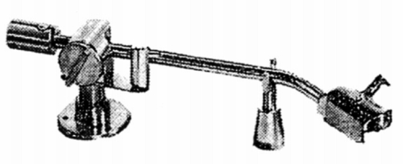

980S

■価格 24,000円■型式 ダイナミックバランス型■全長 320�o■実行長 228�o■オーバー・ハング 可変■トラッキングエラー ■針圧範囲 0〜8g■アーム高さ調整 ■アームベース穴■アンチスケートディバイス あり■アームリフター ■ラテラルバランサー ■カートリッジ自重 ■線間容量 ■発売 〜1967年■販売終了 1968〜69年頃■備考 価格は1967年頃のもの
エンパイアのインデックスへ